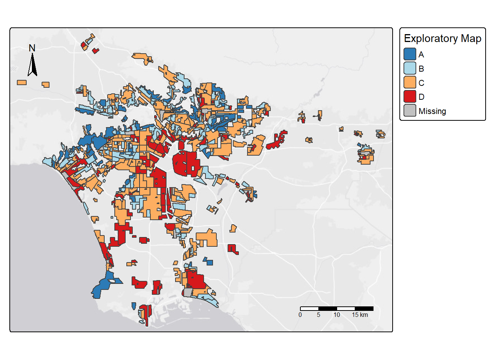
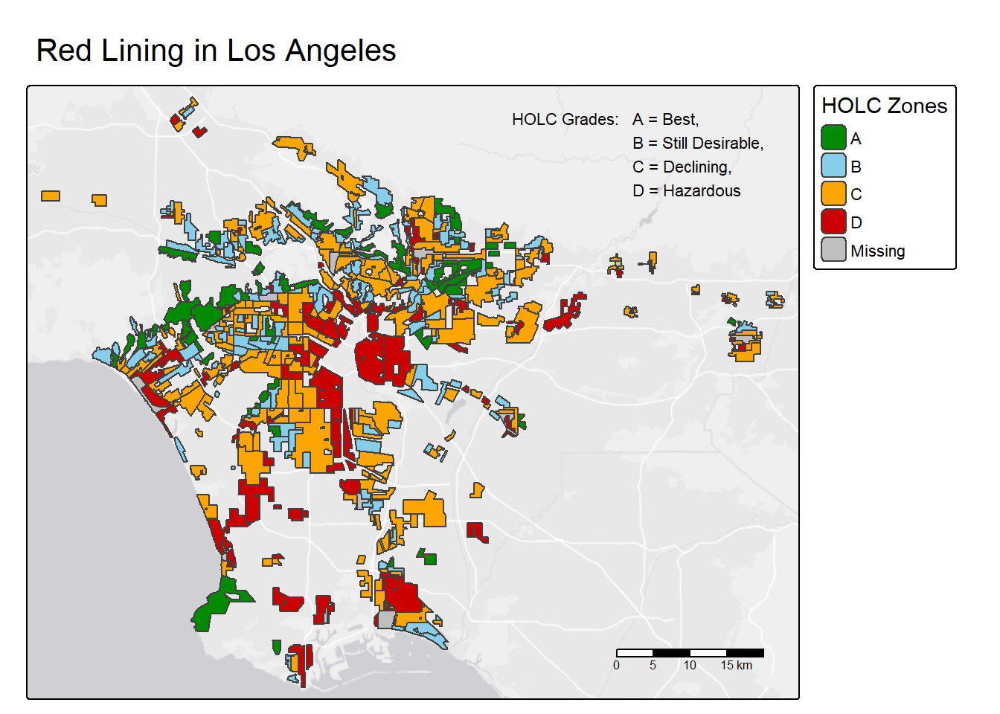
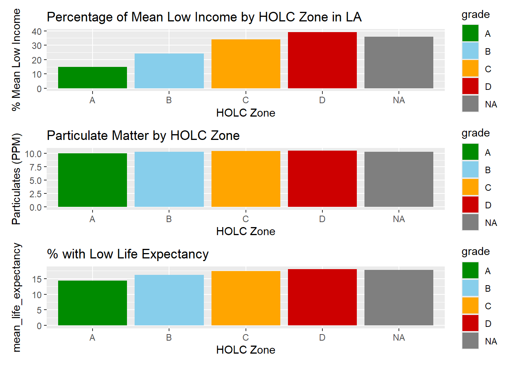

# add in the required libraries
library(sf)
library(tmap)
library(tidyverse)
library(spData)
library(here)
library(paletteer)
library(patchwork)
library(knitr)Patterns of Environmental Justice In Los Angeles California
Preliminary Steps
# Read in the data for analysis and manipulation.
#read in HOLC Redlining file
holc_redline <- st_read(here("data", "mapping-inequality", "mapping-inequality-los-angeles.json"))Reading layer `mapping-inequality-los-angeles' from data source
`C:\Users\kadon\OneDrive\Documents\MEDS\EDS-223\Homework\HW2\EDS223-HW2\data\mapping-inequality\mapping-inequality-los-angeles.json'
using driver `GeoJSON'
Simple feature collection with 417 features and 14 fields
Geometry type: MULTIPOLYGON
Dimension: XY
Bounding box: xmin: -118.6104 ymin: 33.70563 xmax: -117.7028 ymax: 34.30388
Geodetic CRS: WGS 84# read in the bird layer
birds_la <- st_read(here("data","gbif-birds-LA", "gbif-birds-LA.shp"))Reading layer `gbif-birds-LA' from data source
`C:\Users\kadon\OneDrive\Documents\MEDS\EDS-223\Homework\HW2\EDS223-HW2\data\gbif-birds-LA\gbif-birds-LA.shp'
using driver `ESRI Shapefile'
Simple feature collection with 1288865 features and 1 field
Geometry type: POINT
Dimension: XY
Bounding box: xmin: -118.6099 ymin: 33.70563 xmax: -117.7028 ymax: 34.30385
Geodetic CRS: WGS 84# read in the EJScreen, and filter to only include LA, then remove ej_screen to free memory for R Session
ej_screen <- st_read(here("data", "ejscreen", "EJSCREEN_2023_BG_StatePct_with_AS_CNMI_GU_VI.gdb"))Reading layer `EJSCREEN_StatePctiles_with_AS_CNMI_GU_VI' from data source
`C:\Users\kadon\OneDrive\Documents\MEDS\EDS-223\Homework\HW2\EDS223-HW2\data\ejscreen\EJSCREEN_2023_BG_StatePct_with_AS_CNMI_GU_VI.gdb'
using driver `OpenFileGDB'
Simple feature collection with 243021 features and 223 fields
Geometry type: MULTIPOLYGON
Dimension: XY
Bounding box: xmin: -19951910 ymin: -1617130 xmax: 16259830 ymax: 11554350
Projected CRS: WGS 84 / Pseudo-Mercatorej_screen_la <- ej_screen %>%
filter(CNTY_NAME == "Los Angeles County")
rm(ej_screen)#| message: false
#| warning: false
# Set CRS of ej_screen_la and birds_la to match HOLC
ej_screen_la <- st_transform(ej_screen_la, 4326)
birds_la <- st_transform(birds_la, 4326)
holc_redline <- st_transform(holc_redline, 4326)# Check to make sure it worked and that all three now match and create warning message if they do not
if(st_crs(ej_screen_la) == st_crs(holc_redline) &
st_crs(ej_screen_la) == st_crs(birds_la)) {
message("Keep it going! The CRSs match!")
} else {
warning("WOAHHHH There! The CRSs do not match!")
}Part 1
1. Create map of historical redlining neighborhoods
#conduct initial exploratory map analysis
tm_shape(holc_redline) +
tm_borders() +
tm_basemap() +
tm_polygons(col = "grade",
palette = "-RdYlBu",
style = "pretty",
title = "Exploratory Map") +
tm_scale_bar() +
tm_compass(position = c("top", "left")) 
# Add additional features to map, ensure color palette matches HOLC color scheme
tmap_mode("plot")
tm_shape(holc_redline) +
tm_basemap() +
tm_title("Red Lining in Los Angeles") +
tm_borders() +
tm_polygons(col = "grade",
palette = c(
"A" = "green4",
"B" = "skyblue",
"C" = "orange",
"D" = "red3",
"E" = "grey"),
style = "pretty",
title = "HOLC Zones") +
tm_scale_bar() +
tm_credits("HOLC Grades: A = Best,
B = Still Desirable,
C = Declining,
D = Hazardous",
position = c('top', 'right'))
tm_compass(position = c("top", "left")) 2. Create table summaries
Create a table summary of census block groups within each HOLC grade, and include the NA
First, we’ll need to merge the HOLC data with the ejscreen_LA data
# use st_make_valid function on holc_redline
holc_redline <- st_make_valid(holc_redline)
# join holc_redline and ej_screeen_la
holc_ej_la <- st_join(holc_redline, ej_screen_la, join = st_intersects)Next, we’ll find the percentage of census blocks within each HOLC Grade
# use hold_ej_la to find the percentages of HOLC Zones, and drop the geometries.
percent_holc <- holc_ej_la %>%
st_drop_geometry() %>%
group_by(grade) %>%
summarise(count = n()) %>%
mutate(percent = count / sum(count) * 100)
print(percent_holc)# A tibble: 5 × 3
grade count percent
<chr> <int> <dbl>
1 A 449 7.03
2 B 1239 19.4
3 C 3058 47.9
4 D 1346 21.1
5 <NA> 296 4.63# create a table of the percent_holc data with a kable
holc_percent_table <- kable(percent_holc,
caption = "Count and Percentage of Properties in LA by HOLC Grade, including Non-Graded Properties",
digits = 2)
holc_percent_table| grade | count | percent |
|---|---|---|
| A | 449 | 7.03 |
| B | 1239 | 19.40 |
| C | 3058 | 47.87 |
| D | 1346 | 21.07 |
| NA | 296 | 4.63 |
3. Create visualizations
First, we will need to summarize the data. Specifically, we want to look at % low income, percentile for Particulate Matter, and percentile w/ low life expectancy.
# summarize ej_holc dataset for easier graphing
ej_holc_la_summarized <- holc_ej_la %>%
group_by(grade) %>%
summarise(mean_low_income = (mean(LOWINCPCT, na.rm = TRUE) *100),
mean_pm = (mean(PM25, na.rm = TRUE)),
mean_life_expectancy = (mean(LIFEEXPPCT, na.rm = TRUE) * 100))Now with the data summarized, we can graph.
# Graph the mean low income by HOLC Zone (in percentage)
mean_low_inc_LA <- ej_holc_la_summarized %>%
ggplot(aes(x = grade, y = mean_low_income, fill = grade)) +
geom_col() +
scale_fill_manual(
values = c(
"A" = "green4",
"B" = "skyblue",
"C" = "orange",
"D" = "red3",
"E" = "grey"
)
) +
labs(title = "Percentage of Mean Low Income by HOLC Zone in LA",
y = "% Mean Low Income", x = "HOLC Zone")
# Graph the particulate matter by HOLC Zone
mean_pm <- ej_holc_la_summarized %>%
ggplot(aes(x = grade, y = mean_pm, fill = grade)) +
geom_col() +
scale_fill_manual(
values = c(
"A" = "green4",
"B" = "skyblue",
"C" = "orange",
"D" = "red3",
"E" = "grey"
)
) +
labs(title = "Particulate Matter by HOLC Zone", y = "Particulates (PPM)", x = "HOLC Zone")
# Graph the life expectancy percentage by HOLC Zone
mean_le <- ej_holc_la_summarized %>%
ggplot(aes(x = grade, y = mean_life_expectancy, fill = grade)) +
geom_col() +
scale_fill_manual(
values = c(
"A" = "green4",
"B" = "skyblue",
"C" = "orange",
"D" = "red3",
"E" = "grey"
)
) +
labs(title = "% with Low Life Expectancy", x = "HOLC Zone")
mean_low_inc_LA / mean_pm / mean_le
4. Reflect on results
What we are seeing is that there is a clear decrease in life expectancy, while also observing an increase in the amount of particulate matter and lower income as you move from HOLC Zones A to D. This tells us that there is a continuing negative impact due to historical reline grades. Individuals living within these redlined zones are more likely to health and economic hardships then those living outside of them.
Part 2 Legacy of redlining in biodiversity
Create a figure
We will want to begin by joining the HOLC layer with the birds_la shapefile
# join the birds data with HOLC
birds_holc <- st_join(holc_redline, birds_la, join = st_intersects)Next, with the bird data and HOLC blocs joined, we may find percentages for analysis and visualization.
# find percentages of birds within each holc grade
percent_birds <- birds_holc %>%
st_drop_geometry() %>%
group_by(grade) %>%
summarise(count = n()) %>%
mutate(percent = count / sum(count) * 100)
percent_birds# A tibble: 5 × 3
grade count percent
<chr> <int> <dbl>
1 A 30346 22.4
2 B 24201 17.8
3 C 47978 35.4
4 D 30253 22.3
5 <NA> 2904 2.14#plot the bird/holc observations
bird_percentage_plot <- percent_birds %>%
ggplot(aes(x = grade, y = count, fill = grade)) +
geom_col() +
scale_fill_manual(
values = c(
"A" = "green4",
"B" = "skyblue",
"C" = "orange",
"D" = "red3",
"E" = "grey"
)
) +
labs(title = "Bird Observations in LA by HOLC Zone", y = "Bird Observations", x = "HOLC Zone")
bird_percentage_plot
2. Findings & Comparison
The study lead by Ellis & Soto looked at many different states and metropolitan areas, while our study only looked at Los Angeles. They found greater than 2x sampling density in areas deemed “desirable” over “hazardous”.
They accounted for many more factors, such as pop density, climate, and essentially created a model to control for any of these variables. Note that even with accounting for these potentially confouding variables, they still found that historically red-lined regions had far lower sampling density.
Citations:
The data utilized for this analysis was obtained from, and may be found in, the following links:
https://pedp-ejscreen.azurewebsites.net/
https://dsl.richmond.edu/panorama/redlining/#loc=5/39.1/-94.58
https://eds-223-geospatial.github.io/assignments/gbif.org
Miles, Monica Lynn. “(PDF) Mapping for Justice: How Ejscreen Advances Science Education and Community Advocacy.” ResearchGate, Dec. 2024, www.researchgate.net/publication/386898636_Mapping_for_Justice_How_EJScreen_Advances_Science_Education_and_Community_Advocacy.
“Mapping Inequality.” Digital Scholarship Lab, dsl.richmond.edu/panorama/redlining/data. Accessed 18 Oct. 2025.
Wharton, David, and Abhinanda Bhattacharyya. “If L.A. Adds City Council Seats, How Would It Work? These Charts Show The Possibilities.” Los Angeles Times, Los Angeles Times, 2 Oct. 2023, www.latimes.com/california/story/2023-10-02/los-angeles-city-council-expansion.